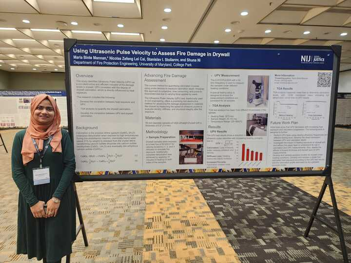

Dr. Shuna Ni and her Ph.D. student Maria attened the 2025 NIJ Forensic Science R&D Symposium held on February 18, 2025, in Baltimore, Maryland. Maria presented a research poster titled “Using Ultrasonic Pulse Velocity to Assess Fire Damage in Drywall.” This work is part of a larger project funded by the National Institute of Justice (NIJ), titled “Investigating the Impacts of Architectural Finishes on Fire Patterns in Support of Developing Data-Driven Tools for Pattern Analysis.” The project aims to enhance fire pattern analysis by incorporating quantitative, non-destructive testing methods to assess post-fire damage, with the goal of improving data-driven forensic investigations.
